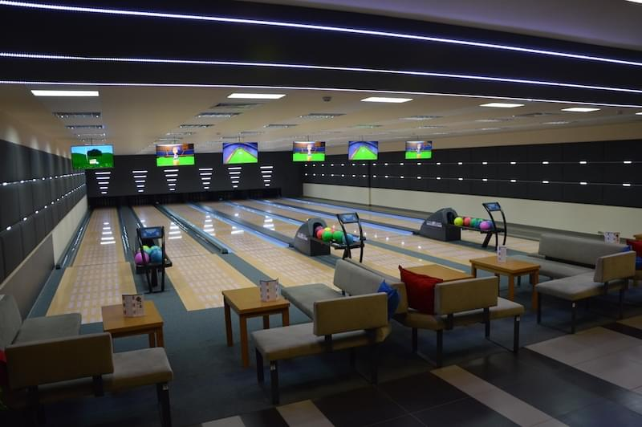
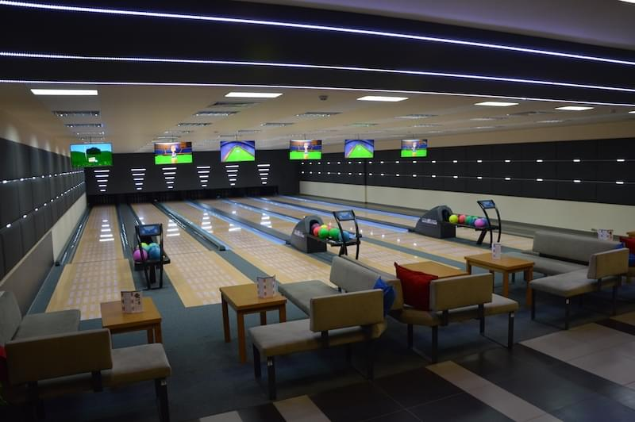
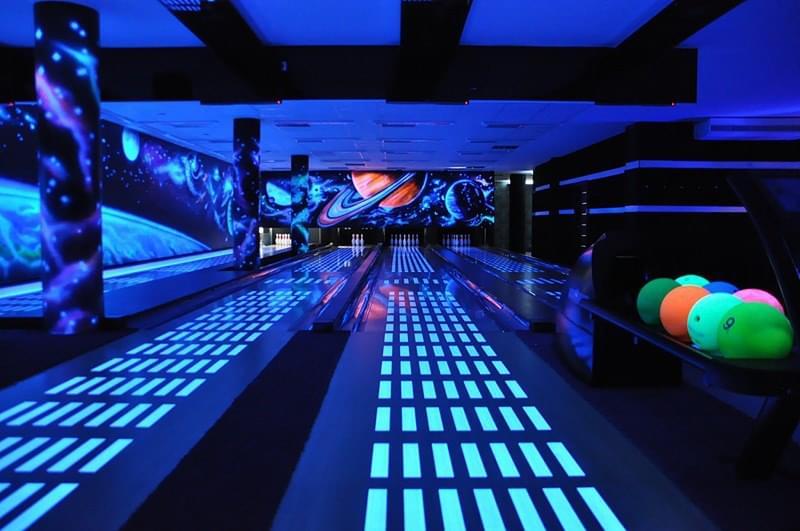
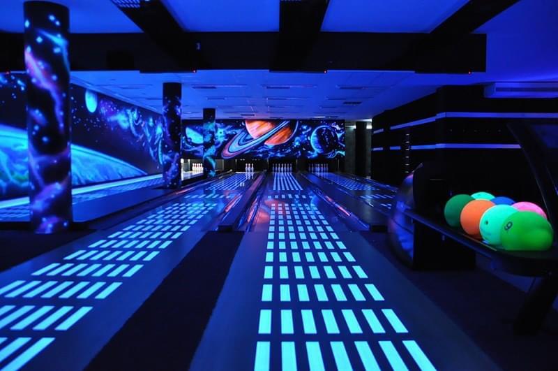

O nas
Chcesz zbudować kręgielnie? My Ci w tym pomożemy!
Naszą misją jest
budowanie nowoczesnych kręgielni, ich bezbłędny montaż i najwyższej jakości obsługa.
Doświadczenie
Ponad 20 lat naszego doświadczenia, 100 zadowolonych klientów, wykonanych ponad 350 torów.
Na całą Polskę
Nasze realizacje możesz znaleźć od „Bałtyku po Tatry”.
Mocne Strony
Nasze atuty to doświadczenie, jakość, elastyczność, uczciwość i rzetelność.
Różne rodzaje torów
Bowling sznurowy, Minibowling, Kręgielnie klasyczną, Micro Bowling,Kręgielnie plenerowe
Pomoc w projektach
Przygotujemy dla Ciebie plan usytułowania torów, baru oraz zapropounujemy aranżacje.
Serwis
Serwis jest do Twojej dyspozycji przez 7 dni tygodniu. Posiadamy magazyn części zamiennych w Ostrowie Wlkp., wykwalifikowanych montażystów i serwisantów.
Zespół
Przemek
Właściel
doradztwo i
sprzedaż kręgielni
Wojtek
Właściel
doradztwo i
sprzedaż kręgielni
Darek
Główny Montażysta
montaże, modernizacje
Joanna
Menadżer ds. sprzedaży
kontakt z klientem
Planowanie
Proces planowania inwestycji jest
bardzo ważny.
Naszym Inwestorom pomagamy na każdym etapie Inwestycji:
- projektowanie,
- pozyskiwanie źródeł finansowych,
- wybór rodzaju technologii bowlingowej,
- przy wyposażeniu lokalu w meble, urządzenia rozrywkowe,
aranżacje pomieszcznia.
Zaplanujemy centrum rozrywki
Prześlij nam plan lokalu w formacje: dwg,pdf lub szkic lokalu.
Zaplanujemy siedziska, bar, urządzenia rozrywkowe.
Skontaktuj nas z architektem, uzgodnimy wymogi na etapie projektu.
Rozmieszczenie
Zbudujemy tory bowlingowe
Dostosuj bowling pod swoje wymagania i
budżet. Ofertę torów do kręgli znajdziesz poniżej:
Wybór torów

Pomożemy w finansowaniu
inwestycji?
Współpracujemy z jednym z liderów rynku leasingowego firmą EFL (Europejski Fundusz Leasingowy). Jesteśmy autoryzowanym partnerem, co pozwala na uproszczenie procedury.
Zaaranżujemy wnętrze
Pomożemy Ci zaprojektować i wykonamy aranżacje lokalu.
Posiadamy w ofercie napinaną grafikę X-FOL, nowoczesne, oświetlenie LED RGB z
możliwością zdalnego sterowane.
Aranżacje

Wyposażymy lokal
Częścią naszej oferty jest
wyposażenie lokalu. Doposażamy inwestycje w bilarda, cybergaja, darta, piłkarzyki i
curling.
Zapoznaj się z naszą ofertą:
Wyposażenie

Pliki PDF
Oferta torów
Bowling sznurowy
Oferowany przez nas bowling sznurowy to idealne połączenie wysokiej jakości urządzeń i rozwiązań technicznych oraz nowoczesnego design za wyjątkowo atrakcyjną cenę. Jesteśmy liderem w tym segmencie w Polsce. Jest to najlepsze rozwiązanie dla mniejszych (do 8 torów) obiektów rekreacyjnych, klubowych, komercyjnych i hotelowych Tory w różnych konfiguracjach, z opcjami białych powierzchni HPL, oświetlenia LED RGB, systemów rzutów celnych Bumper, różnych wersji oprogramowania systemu wyświetlania wyników gry i zarządzania kręgielnią. Zadzwoń przygotujemy szczegółowa specyfikacją pod Twoje potrzeby od torów podstawowych po najbardziej innowacyjne .
Bowling sznurowy o napędzie pneumatycznym
Niemiecka jakość, światowa innowacja firmy NGT, lidera w sprzedaży maszyn sznurowych w Europie. Technologia AIR-O-SETTER firmy NGT już w Polsce.
Kręgielnie klasyczne
Produkt może dziś już nie tak modny. Mający jednak sporo entuzjastów. Nasze kręgielnie klasyczne umożliwiaja grę sportową, wyposażone są we wszystko co jest niezbędne do przeprowadzenia klasycznych zawodów kręglarskich.
Mini Bowling
W przypadku posiadania lokalu o małej powierzchni w której niemożliwy jest montaż tradycyjnego bowlingu proponujemy minibowling o długości 12-17 m, jest to oferta torów mniejszych jednak z pełną automatyką, elektroniką systemem liczenia i wyświetlania wyników gier.
Micro Bowling
To wyjątkowe rozwiązanie, połączenie bowlingu i przyjemności gry w bilard. Strącanie kręgli kijem i kulą? bilardową, wg. zasad bowlingowych, to po prostu gra w bowling w micro rozmiarze (zbliżonym do stołu bilardowego)
Kręgielnie plenerowe
Kręgle w plenerze, tak to możliwe specjalna modułowa konstrukcja, automatyka, pozwalająca na w pełni automatyczną obsługę kręgielni. Oferta dla ośrodków wypoczynkowych, parków rozrywki wszystkich, którzy chcieliby rozszerzyć swą ofertę rekreacji w plenerze.
Bowling używany
W ofercie czasowej posiadamy tory bowlingowe używane tory sprawdzone, wszystkie podzespoły sprawne zmodernizowane przygotowane tak aby ślady użytkowania dla Twojego klienta w lokalu były jak najmniej widoczne na życzenie niektóre elementy nowe: monitory, wykończenia torów, kule, kręgle Na wszystkie tory minimum gwarancja rozruchowa. U nas kupujesz bowling używany ale sprawdzony bez wad ukrytych i niespodzianek, z gwarancją i profesjonalnym montażem. …

Bowling w wersji mini – używany
Bowling w stanie bardzo dobrym, ciagle serwisowany przez autoryzowany serwis. tory sprawdzone, wszystkie podzespoły sprawne tory ok 2 letnie stan, jak na używany bowling, rzadko spotykany kontakt do osoby sprzedajacej: +48668396351 możliwość skorzystania z autoryzowanego demontażu i montazu z gwarancją rozruchu w nowym miejscu Bowling godny uwagi polecamy!
Inne
Oferta mebli
Oferujemy Państwu meble o podwyższonej jakości, wykonywane na zamówienie do lokali użyteczności publicznej, klubów, pubów, restauracji. Trwała konstrukcja, uczciwe, grube wypełnienie pianką, wysokiej jakości materiały obiciowe. Cena zawiera koszt materiału, jak również dowozu i montażu. Do wyboru kilkadziesiąt kolorów oraz wiele rodzajów materiałów obiciowych.
Oferta Urządzeń Rozrywkowych
U nas zakupią Państwo wysokiej klasy urządzenia zarobkowe, które spełnią oczekiwania zarówno właścicieli lokali, jak również ich gości. Oferujemy tylko trwałe i niezawodne urządzenia wiodących marek, Kręgielnia powinna zapewnić także gościom dodatkowe atrakcje a inwestorowi dodatkowy zysk. Dlatego proponujemy zaplanować takie urządzenia w klubie jak : – profesjonalne stoły bilardowe – solidne, z kamienną płytą, z akcesoriami, oświetleniem, w wielkościach od 6 FT do 9 FT, – profesjonalne stoliki piłkarskie, – dart stacjonarny – duży, wyposażone w elektroniczny wrzutnik monet oraz automatyczny system naliczania punktów; – flippery automaty zręcznościowe
Akcesoria i części zamienne do kręgielni
Potrzebujesz butów do kręgli, nowych kul lub kręgli?
W naszej ofercie znajdziesz części do kręgielni Bowling Centrum Trutnov, SES, Vollmer, Vilati
lub inne.
Zawsze w wysokiej jakości i przystępnych cenach.
Zapoznania się z ofertą mailowo lub telefonicznie :
bowlingcentrumpolska@gmail.com 739 671 703
Polub naszą stronę z akcesoriami bowlingowymi na Facebooku – będziesz zawsze na bieżąco z
aktualnymi promocjami!
Aranżacje
Podstawowe cechy malowania ręcznego
bardzo atrakcyjny efekt UV
możliwość stworzenia niepowtarzalnego motywu, z możliwościa korekty , uzupełniania, itd.
malowanie odbywa się przez artystę grafika
malowanie ręczne wymaga odpowiedniego przygotowania ścian, które musza być
wyszpachlowane, zagruntowane, pomalowane na ciemny kolor
Zmienna barwa RGB, zmiana koloru płynnie na całej długości ścieżki jednocześnie z możliwością efektu ruchu świateł na długości ścieżki, niekonwencjonalne efekty oświetlenia np. efekt przelatującego światła czy różny efekt świetlny w różnych kolorach na różnych częściach taśmy, możliwa zmiana/wybór koloru i efektu dla każdego toru oddzielnie)
Miło nam poinformowa że jako jedyni w Polsce wprowadziliśmy grafikę w formie napinanej wytrzymałej dobrze utrzymującej nadruki folii X-FOL.
Podstawowe cechy malowania ręcznego
Zaaranżujemy Państwu lokal, tworząc niepowtarzalne miejsce, do którego klienci chętnie
będą
powraca
brak jakichkolwiek łączeń na całej długości folii, co wyróżnia tę technikę od
powszechnie
wykorzystywanych tapet.
nie ma potrzeby wykańczania ścian, wystarczy równe podłoże na którym montujemy profile,
pomiędzy którymi następnie napinana jest folia. ogranicza to znacznie koszt
przygotowania
ścian, nie potrzeba ich szpachlować, gruntować, malować.
w celu montażu folii na ścianie przedniej maszynowni wystarczy przygotowanie drewnianego
obramowanie z łat po obwodzie
szybki czas montażu, to kolejne ograniczenie kosztów
folia jest bardzo trwała, daje możliwość demontażu, przenoszenia w inne miejsce
Galeria
 

 

Serwis
Twoja kręgielnia wymaga naprawy?
Skontaktuj się z nami. Prace serwisowe prowadzimy od poniedziałku do piątku, w wyjątkow pilnych sprawach, także w weekendy. Posiadamy magazyn części zamiennych, do większości typów kręgielni sznurowych. W przypadku brakujących części na stanie, mamy możliwość realizacji szybkiej dostawy. Więcej informacji i wycena prac serwisowych dostępna mailowo i telefonicznie:
Modernizacje
Modernizujemy wszystkie kręgielnie, nie tylko te zbudowane przez nas. Jeżeli urządzenia sprawiają dużo problemów lub wiele lat użytkowania sprawiło, że bowling wygląda na zużyty, możemy odświeżyć wygląd i usprawnić działanie:
- maszyn,
- powierzchni torow,
- rynnien,
- wykończenia torów,
- powrotów,
- zasobników,
- podajników,
- maszyn stawiających kręgle,
- systemów sterowania maszynami,
- oprogramowania kręgielni,
- elementów maszynowni, hamulców, gum, systemów amortyzacji kul.
Zadzwoń lub napisz, przyjedziemy i wycenimy. Damy Twojej kręgielni nowe życie!
ZMIEŃ STARY AUTOMAT NA AIROSETTER NGT!
NOWOŚĆ! Modernizacja kręgielni z maszynami bezsznurowymi, na najnowocześniejsze maszyny z technologią pneumatyczną.
Przed zmianą
wysokie koszty energii,
ciągłe kupowanie drogich części zamiennych,
liczne awarie maszyn spowodowane brakiem części
zamiennych,
ciągłe szukanie technika i serwisu.
Po zmianie
mniejsze koszty energii,
ograniczenie nakładów na serwis i konserwację,
ograniczenie negatywnego wpływu na środowisko naturalne,
mniejsze koszty pracy.
W ciągu ostatnich 36 miesięcy najlepiej sprzedający się pinsetter w Niemczech …
może nawet w Europie.
Każda jednostka napędowa airOsetter składa się z wysokiej jakości komponentów przemysłowych. Na
przykład używamy wytrzymałego, bardzo odpornego na zużycie tworzywa sztucznego, specjalnego stopu
aluminium, który cechuje się wysoką twardością powierzchniową.
Małe elementy elektroniczne takie jak: wyłączniki krańcowe, elementy elektryczne i połączenia
wtykowe pochodzą również z zastosowań przemysłowych o dużej wytrzymałości i precyzji wykonania.
Zarówno maszyna jak i wyciągarka kuli pracują na tej samej uniwersalnej części zamiennej .
Wyeliminowano wiele awaryjnych w innych maszynach elementów jak koła w podajnikach, silniki
elektryczne .
System wyświetlania wyników jest bardzo stabilny dzięki zastosowaniu systemu Linux i możliwości
serwisowania on-line.
Dzięki tym wszystkim środkom możemy zapewnić naszym klientom długą bezawaryjna pracę technologii
bowlingowej airOsetter, gwarantowaną przez firmę NGT.
Kontakt
Bowling Centrum Polsa S.C.
ul. Żółkiewskiego 3A
Vp.
63 – 400 Ostrów Wlkp.
NIP: 621-177-60-19